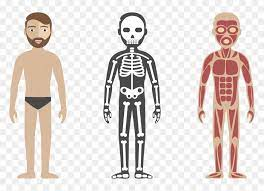

O que é Front-End?
Front-end refere-se à parte de um sistema ou aplicativo que interage diretamente com os usuários. Em termos de desenvolvimento de software, o front-end é o conjunto de tecnologias e práticas usadas para criar a interface de usuário (UI) e a experiência do usuário (UX) de um site ou aplicativo. Isso inclui tudo o que os usuários veem, ouvem e interagem diretamente em um dispositivo, como páginas da web, aplicativos móveis e interfaces de dispositivos inteligentes.
Quais as ferrramentas mais usadas no front-end?
As tecnologias comuns usadas no desenvolvimento front-end incluem HTML (HyperText Markup Language) para estruturação de conteúdo, CSS (Cascading Style Sheets) para estilização e design visual, e JavaScript para interatividade e dinamismo.
O que html?
- HTML significa linguagem de marcação de hipertexto
- HTML é a linguagem de marcação padrão para criação de páginas da Web
- HTML descreve a estrutura de uma página da Web
- Os elementos HTML informam ao navegador como exibir o conteúdo
Versões
- HTML4
- HTML5
O HTML5 trouxe várias melhorias e recursos novos em comparação com o HTML4. Aqui estão algumas das principais diferenças:
-
Tags Semânticas:
O HTML5 introduziu várias novas tags semânticas, como header, nav, article, section,, entre outras.
-
Suporte Multimídia Incorporado:
Tags audio e video
-
Formulários Aprimorados:
O HTML5 introduziu novos tipos de entrada em formulários, como email, url, tel, date, number, entre outros
-
APIs JavaScript Avançadas:
O HTML5 inclui uma série de APIs JavaScript poderosas, como a API de Geolocalização, API de Armazenamento Web
-
Suporte para Gráficos e Animações:
O HTML5 introduziu o elemento canvas para desenhar gráficos dinâmicos, como gráficos de dados e jogos